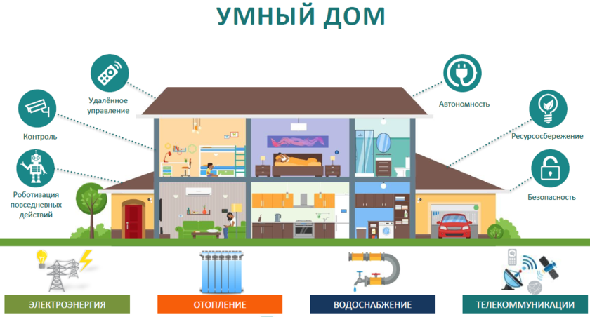
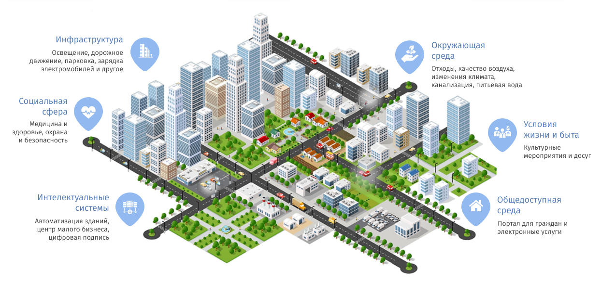

Интернет вещей (IoT) - это сеть взаимосвязанных устройств, объектов и систем, оснащенных датчиками, программным обеспечением и возможностями подключения, позволяющими им собирать данные и обмениваться ими через Интернет. Эти устройства могут взаимодействовать друг с другом, анализировать данные и принимать обоснованные решения без вмешательства человека. Основная цель IoT - повышение эффективности, производительности и качества принимаемых решений путем предоставления информации в режиме реального времени и автоматизации.
IoT находит широкое применение в различных отраслях, включая:
Умные дома: IoT позволяет автоматизировать и контролировать такие домашние устройства, как освещение, системы безопасности, термостаты и развлекательные системы, что повышает удобство и энергоэффективность.

Здравоохранение: IoT используется для удаленного мониторинга состояния пациентов, отслеживания медицинского оборудования и оптимизации процессов в здравоохранении с целью улучшения качества обслуживания пациентов и повышения результативности лечения.
Промышленность и производство (Индустрия 4.0): IoT используется для оптимизации производственных процессов, мониторинга состояния оборудования, прогнозирования потребностей в техническом обслуживании и повышения общей операционной эффективности.
Умные города: IoT используется в городском планировании, управлении дорожным движением, утилизации отходов, энергоэффективности и общественной безопасности для создания устойчивой и эффективной городской среды.

Транспорт: IoT интегрируется в транспортные средства для мониторинга и обслуживания в режиме реального времени, оптимизации транспортных потоков и создания возможностей для автономных транспортных средств.